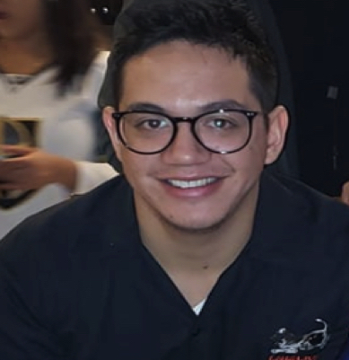
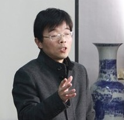
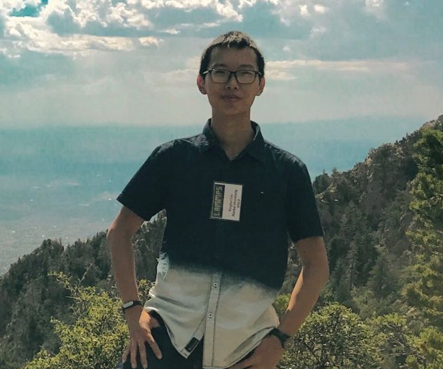
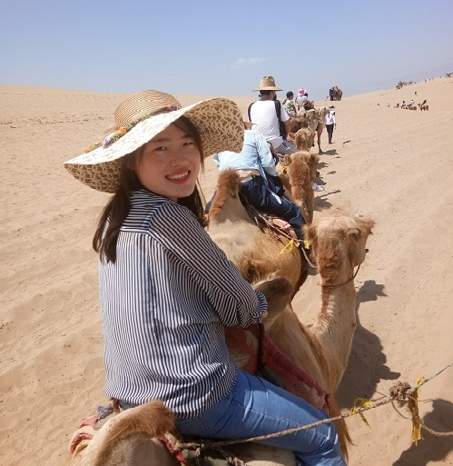

Qiang Zhu is an Assistant Professor in the Department of Physics and Astronomy at
the University of Nevada Las Vegas. He is also the faculty member in High Pressure Science
and Engineering Center in UNLV. Qiang holds a Ph.D in Mineral Physics from State University
of New York at Stony Brook, as well as a B.S in Materials Science and Engineering from Beijing University
of Aeronautics and Astronautics in China. He joined UNLV in October 2016.
Senior Visitors
Postdocs
Students
Howard Yanxon is currently a PhD student studying condensed matter physics.
His thesis dissertation will be focus on modelling and simulation of new materials for sustainable energy by using machine learning and first-principle calculations. Hopefully, these materials will be useful for the advancement of technology. He started working in Dr. Zhu’s group in early 2018.
Xuhui Yang
is a visiting PhD student in Materials Science from Fuzhou University, China.
She received her Master Degree in Materials Science and Engineering from the University
of Science and Technology Beijing. She focuses on first-principle calculations of new materials,
especially electronic properties. She started to work under the instruction of Qiang Zhu from October 2018.
David Zagaceta
is currently an undergraduate student at UNLV studying Computational Physics.
David is interested in the application of machine learning methods to problems in Condensed Matter
Physics and Materials Science. Problems of interest are metastability of materials
under extreme conditions, emergent phenomena in correlated electron systems, and material defects.
Dean Sayre
is currently an undergraduate student at UNLV studying Computational Physics.
Dean is interested in various machine learning techniques and their applications to
Physics and Materials Science.

Erick Serrano
currently an undergraduate studying Computer Science & Engineering, with a minor in Physics. He is interested in enrolling in a PhD program in Physics and Computer Science, respectively. Fusing the two fields through computational science is a creative and helpful way for him to understand the career interests post-graduate school
Previous Members
Dr. Shengcai Zhu received his PhD in Chemistry from Fudan University China.
He worked in UNLV as a postdoc between July 2017 - July 2019.
He returned to Sun Yat Sen university, China as an Assistnat Professor in August, 2019
Dr. Yanling Li is a professor in physics from Jiangsu Normal University China.
He is expertise in compuational physics and materail sciences.
His recent work is focusing on studying materails at extreme conditions and the unexpected change
in materails physical and chemical properties under high pressure.
He is visiting Zhu's group since October 2017

Scott Fredericks is a graduate student pursuing an M.S. in Physics at UNLV.
He received his B.S. in Physics from the University of Arkansas.
He completed his master under the instruction of Qiang Zhu between August 2017 and August 2019.
Katie Randolph (now a student at Washington University in St. Louis)
Katie Randolph is an undergraduate pursing her B.S in Applied Physics with a minor in Biology at UNLV.
ested in using biophysics and material sciences to optimize sustainable energy technologies.
oping her senior thesis, a machine learning model for structure-property prediction, under the guidance of Dr. Zhu.
Giovanny Vazquez (now a student at UNLV) is an undergraduate pursuing a B.S. in dual-major in Physics and Mechanical Engineering at UNLV.
Ever since a child, he has the utmost fascination with the sciences, in particular with the fields involved in space exploration inspired by the Apollo missions.
He worked under the instruction of Qiang Zhu in 2017
Yingkai Liu (now a student at Nankai University) is a visiting undergraduate from Nankai University, China.
He is interested in all kinds of simulations and calculations and finds joy in learning awesome
algorithms to uncover the physics hidden behind.
He worked under the instruction of Qiang Zhu from July 2017.

Le Fang (now a student at Shanghai University) is a visiting master students from Shanghai University, China.
She is interested in materials simulation at extreme conditions.
She started to work under the instruction of Qiang Zhu from October 2017.

Jingyu Qu is a graduate student pursuing a PhD in Physics.
Jingyu Qu is a visiting undergraduate from China Agricultural University. She received her M.S. in
Physics from China Agricultural University. She focuses on first-principles calculations and prediction of new
materials. She started to work under the instruction of Qiang Zhu from September 2017.